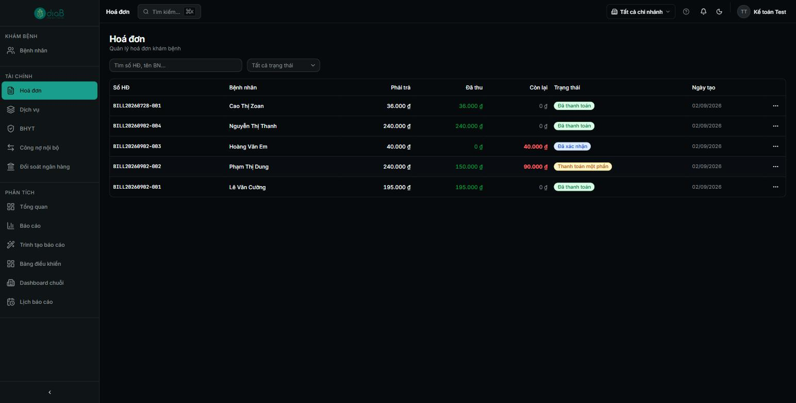
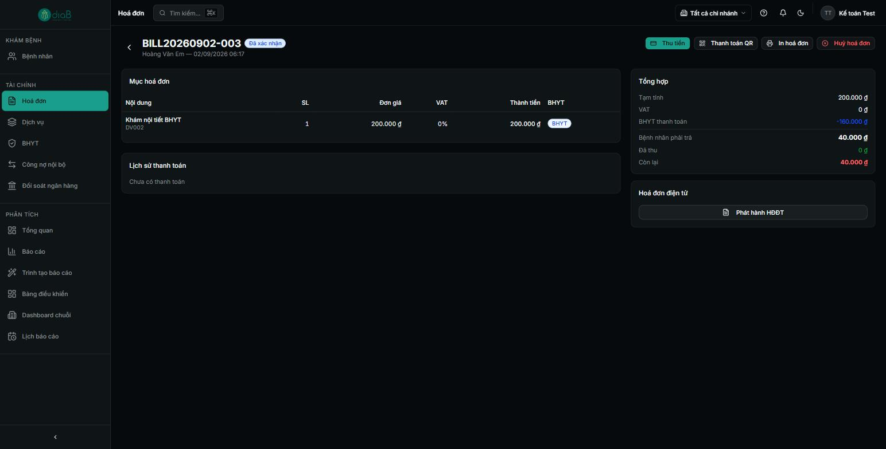
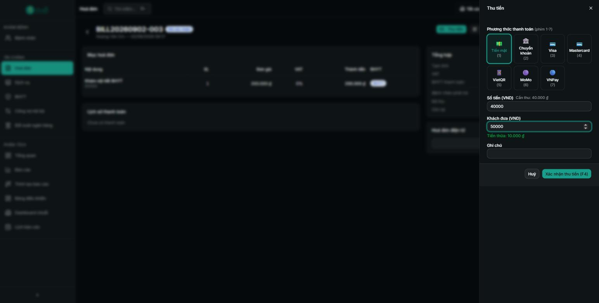
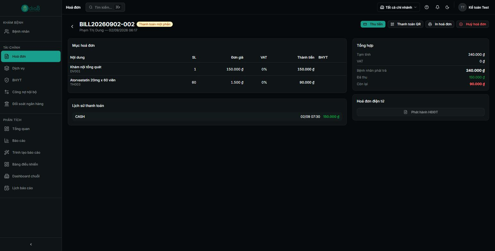
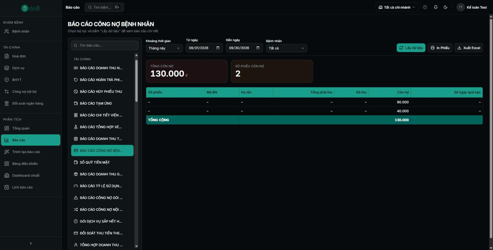

Hướng dẫn thu tiền hóa đơn khám bệnh (đủ các phương thức), xử lý thanh toán một phần dẫn tới công nợ, và theo dõi danh sách bệnh nhân còn nợ.
Tổng quan luồng thu ngân
Sau khi bệnh nhân khám xong, hệ thống sinh hóa đơn gồm phí khám, dịch vụ, thuốc. Thu ngân mở hóa đơn, thu tiền bằng nhiều phương thức (tiền mặt, chuyển khoản, thẻ, QR, ví điện tử). Nếu bệnh nhân trả thiếu, hóa đơn chuyển sang thanh toán một phần và phần còn lại thành công nợ. Có thể phát hành hóa đơn điện tử.
Sơ đồ luồng rút gọn
Mở Hoá đơn → chọn hóa đơn cần thu.
Bấm Thu tiền → chọn phương thức, nhập số tiền.
Trả đủ: hóa đơn “Đã thanh toán”.
Trả thiếu: hóa đơn “Thanh toán một phần”, còn lại là công nợ.
Theo dõi Công nợ để thu tiếp lần sau.
Vai trò tham gia
Vai trò
Tham gia bước nào
Quyền cần có
Kế toán / Thu ngân
Thu tiền, quản lý hóa đơn, công nợ, HĐĐT
Vai trò Kế toán (45 quyền)
Lễ tân
Có thể thu ngân bước tiếp đón (tuỳ cấu hình)
Vai trò Lễ tân
Điều kiện tiên quyết
Đã đăng nhập bằng tài khoản Kế toán và chọn đúng chi nhánh.
Có hóa đơn ở trạng thái chờ thu (VD “Đã xác nhận”).
1Danh sách hóa đơn
Vào menu Hoá đơn. Bảng hiển thị theo cột Số HĐ, Bệnh nhân, Phải trả, Đã thu, Còn lại, Trạng thái, Ngày tạo. Tìm theo số HĐ/tên bệnh nhân và lọc theo trạng thái. Hóa đơn còn nợ có số Còn lại màu đỏ.

📷 images/ke-toan/01-danh-sach-hoa-don.png — Bảng Hoá đơn với cột Số HĐ / Bệnh nhân / Phải trả / Đã thu / Còn lại / Trạng thái; có dòng “Đã thanh toán” và dòng còn nợ (Còn lại đỏ, trạng thái “Đã xác nhận”).
Danh sách hóa đơn
① Cột Phải trả / Đã thu / Còn lại.
② Cột Trạng thái: Đã thanh toán (đủ) hoặc Đã xác nhận (chờ thu / còn nợ).
③ Bấm một dòng để mở chi tiết.
2Mở chi tiết hóa đơn
Màn hình chi tiết gồm: Mục hóa đơn (Nội dung, SL, Đơn giá, VAT, Thành tiền, BHYT), Lịch sử thanh toán, Tổng hợp (Tạm tính, VAT, Bệnh nhân phải trả, Đã thu, Còn lại) và mục Hoá đơn điện tử. Trên cùng có các nút Thu tiền, Thanh toán QR, In hoá đơn, Huỷ hoá đơn.

📷 images/ke-toan/02-chi-tiet-hoa-don.png — Chi tiết hóa đơn HD-2026-00003 (Đã xác nhận): nút Thu tiền / Thanh toán QR / In hoá đơn / Huỷ hoá đơn; mục Mục hóa đơn, Lịch sử thanh toán, Tổng hợp.
Chi tiết hóa đơn
① Nút Thu tiền (chính), Thanh toán QR, In hoá đơn.
② Mục Mục hóa đơn và Lịch sử thanh toán.
③ Mục Tổng hợp (Phải trả / Đã thu / Còn lại).
3Thu tiền (thanh toán đủ)
Bấm Thu tiền. Bảng thu tiền cho chọn Phương thức thanh toán (phím tắt 1–7): Tiền mặt (1), Chuyển khoản (2), Visa (3), Mastercard (4), VietQR (5), MoMo (6), VNPay (7). Nhập Số tiền (mặc định bằng số cần thu). Với tiền mặt, nhập Khách đưa để hệ thống tính Tiền thừa. Bấm Xác nhận thu tiền (F4).

📷 images/ke-toan/03-thu-tien.png — Bảng “Thu tiền”: lưới phương thức Tiền mặt/Chuyển khoản/Visa/Mastercard/VietQR/MoMo/VNPay, ô Số tiền (Cần thu: 320.000đ), Khách đưa, Tiền thừa, nút “Xác nhận thu tiền (F4)”.
Bảng thu tiền
① Chọn Phương thức thanh toán (1–7).
② Nhập Số tiền (mặc định = số cần thu).
③ (Tiền mặt) nhập Khách đưa → hiện Tiền thừa.
④ Bấm Xác nhận thu tiền (F4).
Nhánh rẽ — Thanh toán QR: Nút Thanh toán QR tạo mã QR (VietQR) để bệnh nhân quét chuyển khoản; sau khi nhận tiền, xác nhận để ghi nhận thanh toán.
4Thanh toán một phần → công nợ Nhánh còn nợ
Nếu bệnh nhân chỉ trả một phần, nhập Số tiền nhỏ hơn số cần thu rồi xác nhận. Hóa đơn chuyển sang trạng thái “Thanh toán một phần”; phần chưa trả được ghi là Còn lại (công nợ). Mục Lịch sử thanh toán ghi lại từng lần thu.

📷 images/ke-toan/04-thanh-toan-mot-phan.png — Mục Tổng hợp: Tạm tính 320.000đ, Bệnh nhân phải trả 320.000đ, Đã thu 200.000đ (xanh), Còn lại 120.000đ (đỏ); Lịch sử thanh toán: CASH 200.000đ; mục “Hoá đơn điện tử — Phát hành HĐĐT”.
Thanh toán một phần & công nợ
①Đã thu (VD 200.000đ, màu xanh) < Bệnh nhân phải trả.
②Còn lại (VD 120.000đ, màu đỏ) = công nợ.
③Lịch sử thanh toán ghi lần thu (VD CASH 200.000đ).
④ Nút Phát hành HĐĐT để xuất hóa đơn điện tử.
⚠️ Lưu ý: Với hóa đơn còn nợ, lần sau bấm lại Thu tiền — hệ thống hiển thị Cần thu đúng bằng phần còn lại để thu nốt.
5Theo dõi công nợ
Vào trang Công nợ (khu vực Thu ngân). Trang liệt kê bệnh nhân còn nợ kèm Điện thoại, Đã thu, Còn nợ, Lần TT cuối và Aging (tuổi nợ: 0–30 ngày, 31–60…). Tiêu đề hiển thị Tổng nợ toàn phòng khám.

📷 images/ke-toan/05-cong-no.png — Trang Công nợ: “Tổng nợ: 185.000đ”, bảng bệnh nhân còn nợ (Mã BN, Tên, Điện thoại, Đã thu, Còn nợ đỏ, Lần TT cuối, Aging 0–30 ngày).
Danh sách công nợ
①Tổng nợ toàn phòng khám ở tiêu đề.
② Cột Còn nợ (đỏ) theo từng bệnh nhân.
③ Cột Aging — phân nhóm tuổi nợ (0–30 ngày…).
Liên quan: Khu vực Thu ngân còn có Đối soát ngân hàng và Công nợ nội bộ giữa các chi nhánh để đối chiếu dòng tiền.
Câu hỏi thường gặp
Thu tiền mặt nhưng nút xác nhận chưa bấm được?
Với tiền mặt cần nhập ô Khách đưa để hệ thống tính tiền thừa; sau đó nút Xác nhận thu tiền (F4) mới hoàn tất.
Thu nhầm số tiền?
Kiểm tra lại ở mục Lịch sử thanh toán. Việc điều chỉnh/hoàn tiền thực hiện theo quy trình (báo cáo hoàn tiền) — liên hệ quản lý.
Bệnh nhân muốn hóa đơn điện tử?
Sau khi thanh toán, dùng nút Phát hành HĐĐT trong mục Hoá đơn điện tử của hóa đơn.